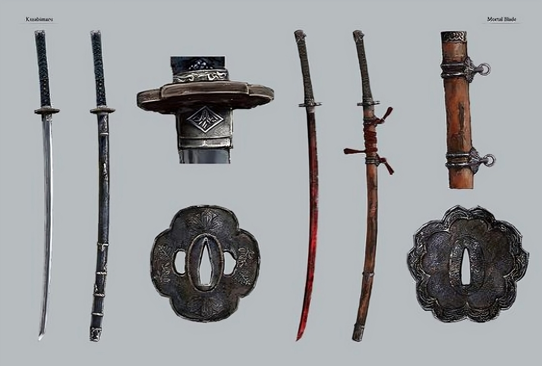

Weapons
The Wolf's Kusabimaru & Fushigiri
The katana, named Kusabimaru, is the primary weapon and cannot be upgraded, but can be enhanced with Prosthetic Tools if certain skills are unlocked. The secondary sword, Fushigiri, is related to Kuro, the Divine Heir, and is used for the final Deathblow to undying enemies and bosses. The final Deathblow with Kusabimaru is called Shinobi Execution, with Fushigiri, it's called Immortality Severed, and in a specific situation, Gracious Gift of Tears.

The Wolf's Prosthetic Arm & Tools
Prosthetic Tools are special Equipment in Sekiro: Shadows Die Twice. These are found throughout the world, and can be equipped into the Prosthetic Arm and used during combat and exploration alongside the primary weapon, the Kusabimaru.

 @sekirothegame
@sekirothegame @sekirothegame
@sekirothegame @sekirothegame
@sekirothegame